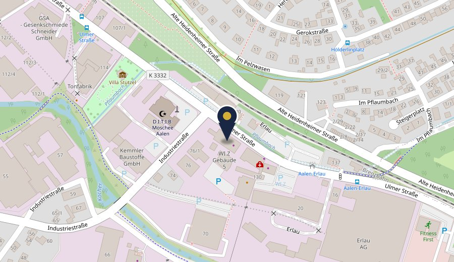

Rechtsanwalt · Notar a.D.
Hans-Jörg Korting
Rechtsanwalt & Notar a.D.
Ulmer Straße 124
im Wi.Z (Wirtschaftszentrum)
73431 Aalen
Dienstag – Donnerstag
08:00 – 12:00 Uhr
13:00 – 16:00 Uhr
Termine nur nach Vereinbarung
Als Rechtsanwalt und Notar a. D. mit jahrzehntelanger Erfahrung vertrete und berate ich sowohl Privatpersonen als auch Unternehmen kompetent, vertrauensvoll und mit persönlichem Engagement
Meine Schwerpunkte liegen im Erbrecht, im Immobilien- und Gesellschaftsrecht sowie der Nachlassverwaltung, der Erbenermittlung, der Streitschlichtung und Mediation.
Als Notar war ich zur Unparteilichkeit und Neutralität verpflichtet. In dieser Funktion habe ich zahlreiche Scheidungs- und Erbauseinandersetzungen streitmindernd begleitet und durch ausgewogene Vertragsgestaltungen für alle Beteiligten tragfähige und interessengerechte Lösungen konzipiert.
In diesen Rechtsgebieten stehe ich Ihnen als erfahrener Ansprechpartner zur Seite und begleite Sie sicher und zuverlässig bei allen rechtlichen Fragen.
Mit langjähriger Erfahrung berate und vertrete ich Sie kompetent und vertrauensvoll in folgenden Rechtsbereichen:
Ulmer Straße 124
im Wi.Z (Wirtschaftszentrum)
73431 Aalen
Unsere Kanzlei befindet sich in der 3. Etage.

In Karten-App öffnen ↗
Gerne stehen wir Ihnen für ein persönliches Gespräch zur Verfügung.
Rufen Sie uns an oder kontaktieren Sie uns per
E-Mail.